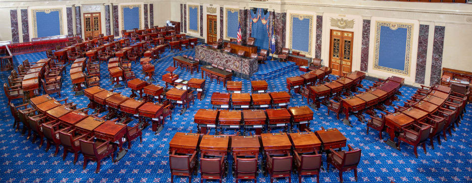
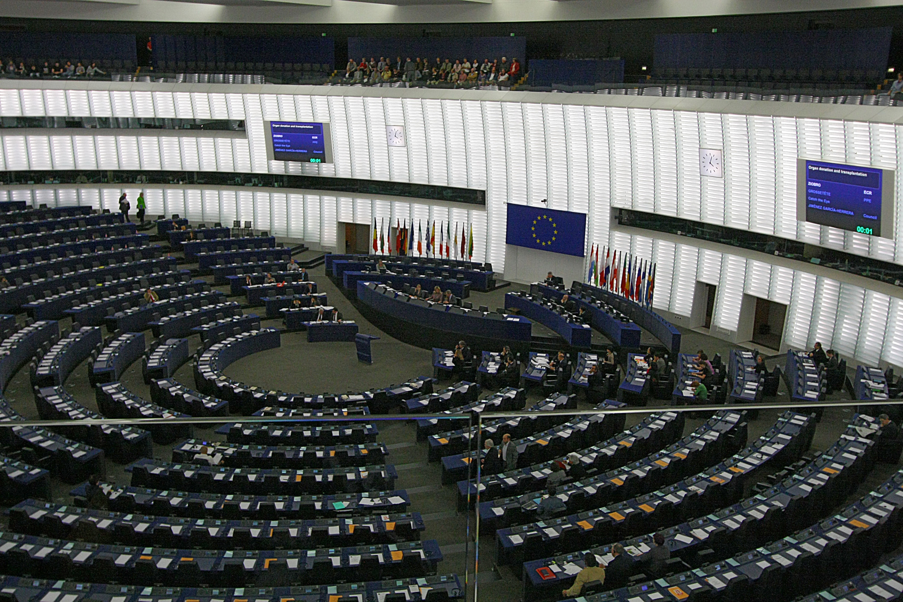

Executive Summary
미국 연방이 처음으로 'AI 위반'을 신고한 노동자를 직접 보호하려 한다. 상원의 AI 내부고발자 보호법(S.1792)과 2026년 6월 공개된 토론 초안 GAAIA가 같은 원칙을 공유한다. 회사가 내민 NDA나 중재 조항이 있어도, 직원은 AI 관련 법 위반을 규제 당국과 의회에 알릴 수 있다. 이 글은 그 법안들이 무엇을 바꾸는지를 데이터 거버넌스의 관점에서 본다.
지금까지 AI 규제는 대부분 결과를 단속했다. 차별적 채용 판정, 사기적 딥페이크처럼 이미 나온 출력이 대상이었다. 새 법안의 무게중심은 그 이전으로 옮겨간다. 어떤 데이터로 학습했고 어떤 위험을 알면서도 배포했는지를 본 사람, 곧 데이터·모델 결정에 접근한 내부자를 법적으로 보호받는 증인으로 세운다.
데이터 엔지니어와 ML 엔지니어에게 이것은 추상적인 정책 뉴스가 아니다. 학습 데이터를 고르고 모델 배포에 서명하는 일상 업무가 법적 증거가 되는 구조이기 때문이다. 데이터 거버넌스가 컴플라이언스를 넘어 노동권의 문제로 번지는 지점을, 네 개의 장면으로 정리했다.
주요 수치
네 개의 숫자가 이 변화의 윤곽을 보여준다. 누가 먼저 위험을 알리려 했는지, 보복당한 신고자가 무엇을 돌려받는지, 어떤 규모의 기업이 데이터·모델 결정을 공시해야 하는지, 그리고 의무를 어겼을 때 얼마를 무는지. 아래 수치는 모두 본문에서 다시 설명된다.
출처: Time, 상원 법사위, California SB 53
13명
Right to Warn 서명자
OpenAI·DeepMind 현·전직 직원의 2024년 공개서한
2배
보복 시 임금 구제
복직 + 이자 포함 두 배 임금 + 변호사 비용
5억 달러
GAAIA 공시 의무 기준
매출 5억 달러 이상 프론티어 개발자에 데이터·모델 공시
100만 달러
캘리포니아 SB53 벌금 상한
내부고발자 보호·안전사고 보고 위반 시
계약서가 진실을 막았다
2024년 5월, OpenAI를 떠난 직원들이 한 가지 선택을 강요받았다는 사실이 알려졌다. 포괄적 비공개·비비판 조항에 서명하지 않으면, 수백만 달러 규모로 쌓인 스톡옵션을 포기해야 했다. 사실상 평생 회사를 비판하지 말라는 요구였고, 공개된 사실에 대해서도 입을 다물게 하는 내용이었다. 익명의 직원들은 증권거래위원회(SEC)에 "우리는 법적 고발조차 못 하게 묶여 있다"는 민원을 넣었다.
한 달 뒤, OpenAI와 구글 딥마인드의 현직·전직 직원 13명이 'Right to Warn(경고할 권리)'이라는 공개서한을 냈다. 핵심 주장은 분명했다. AI 기업은 규제를 피할 재정적 동기를 갖고 있고, 회사 내부의 거버넌스만으로는 그 동기를 견제할 수 없다는 것이었다. 이들이 요구한 것은 단순했다. 안전에 관한 우려를 규제 당국과 이사회, 그리고 대중에게 알릴 수 있는 권리.
기존 내부고발자법이 AI에는 잘 닿지 않는 구조적 이유가 여기 있다. 전 OpenAI 연구원 다니엘 코코타일로의 표현을 빌리면, AI는 아직 전문 규제가 없는 분야다. 규제된 산업이 아니므로 위반을 신고할 법적 통로도, 그 신고자를 지킬 보호막도 마련돼 있지 않았다. 많은 위험이 아직 불법으로 규정조차 되지 않았기에, 기존 법은 그 위험을 본 사람을 보호하지 못한다.
그 결과는 침묵이었다. 트레이드 시크릿과 NDA를 겹쳐 두면 안전 결함을 회사 안에 가두는 일이 표준 관행이 됐다. 2024년 11월, ChatGPT 학습 데이터의 법적·윤리적 문제를 공개 분석하고 뉴욕타임스–OpenAI 소송에서 증언을 준비하던 전직 연구원 수치르 발라지가 갑작스럽게 사망한 사건은, 내부자가 얼마나 취약한 위치에 서 있는지를 보여주는 사례로 널리 인용됐다.

연방이 처음으로 나섰다
침묵을 깨려는 입법이 두 갈래로 움직이고 있다. 하나는 좁고 빠른 법, 다른 하나는 넓고 야심 찬 초안이다. 둘은 한 가지 원칙을 공유한다. 회사가 내민 계약서로 신고할 권리를 빼앗을 수 없다는 것.
2.1AI 내부고발자 보호법 (S.1792 / H.R.3460)
상원의 척 그래슬리(공화·아이오와)와 크리스 쿤스(민주·델라웨어)가 초당적으로 발의했고, 하원에서는 테드 류(민주·캘리포니아)와 제이 오버놀티(공화·캘리포니아)가 동반 법안을 냈다. 보호 대상은 AI 기업의 현직·전직 직원과 계약자다. 이들이 'AI 위반' 또는 'AI 보안 취약성'을 신고하면 해고·강등·괴롭힘·차별로부터 보호받는다.
몇 가지 설계가 특히 눈에 띈다. 신고자는 위반 사실을 증명할 필요가 없다. 합리적으로 그렇게 믿을 만한 이유, 곧 선의(good faith) 기준만 충족하면 된다. 신고를 받는 곳은 연방 법집행·규제 기관부터 검찰총장, 의회까지 폭넓다. 보복이 일어났을 때의 구제도 구체적이다. 근속 연수를 포함한 원직 복직, 이자를 더한 두 배 임금, 손해배상, 변호사 비용까지 명시돼 있다. 무엇보다, NDA나 중재 조항 같은 계약으로 이 권리를 포기시킬 수 없다.
국가 내부고발자 센터, 정부 책임 프로젝트, 민주주의·기술 센터 등 20개가 넘는 단체가 이 법안을 지지하고 있다. 다만 현재 초안에는 신고 포상금 같은 재정적 보상은 빠져 있다.

2.2대미국 인공지능법(GAAIA) — 더 큰 그림
2026년 6월 4일 공개된 269페이지짜리 토론 초안 GAAIA(Great American Artificial Intelligence Act)는 같은 보호를 훨씬 넓게 펼친다. 제이 오버놀티와 로리 트래한(민주·매사추세츠)이 발의했고, 하원의장 마이크 존슨을 포함한 여섯 명이 공동 발의에 이름을 올렸다. 내부고발자 보호 대상이 프론티어 AI 기업만이 아니라 모든 고용주의 직원과 독립 계약자로 확장된다.
데이터 거버넌스 조항이 이 글의 관점에서 더 중요하다. 매출 5억 달러 이상의 대형 프론티어 개발자는 리스크 프레임워크를 공개 발행해야 하고, 새 모델을 배포할 때마다 출시일·지원 언어·출력 방식·의도된 용도·제한 사항·리스크 평가·완화 조치를 담은 보고서를 공시해야 한다. 그리고 이 공시는 독립 검증 기관(IVO)을 통한 제3자 감사를 거친다. 데이터와 모델에 관한 결정이 기록으로 남고, 외부 검증의 대상이 된다는 뜻이다.
GAAIA는 노동 데이터까지 건드린다. 직원 100명 이상 고용주가 AI를 대규모 해고의 '실질적 요인'으로 삼았다면, 사용한 AI 유형과 그로 인한 일자리 손실 추정 비율, 재교육 노력을 공시하도록 WARN법을 개정한다. 노동부 안에 AI 인력 연구 허브를 두고, 통계국과 인구조사국이 AI 도입 데이터를 조사하게 한다. 다만 이 초안에는 논쟁점도 있다. 향후 3년간 AI '개발' 규제를 연방이 선점하고 주 법률의 권한을 제한하는 조항이 함께 들어 있어, 8월 휴회 전 통과 전망은 밝지 않다.
데이터를 본 사람이 첫 증거다
여기서부터가 데이터를 다루는 사람에게 직접 닿는 이야기다. 지금까지의 AI 규제는 대체로 출력을 본다. 채용 알고리즘이 특정 집단을 떨어뜨렸는지, 딥페이크가 누군가를 속였는지. 그러나 그 출력에 이르는 책임의 사슬은 훨씬 앞에서 시작된다.
- • 어떤 데이터로 학습했는가
- • 어떤 편향을 알면서도 배포했는가
- • 안전 평가가 어떻게 기록됐는가
- • 누가 '배포 가능'이라고 결정했는가
이 질문들의 답은 로그에만 있지 않다. 학습 데이터를 고르고, 평가 결과를 보고, 배포 버튼을 누른 사람의 머릿속과 기록에 있다. 새 법안이 보호하려는 대상이 바로 그 사람이다. 데이터 엔지니어, ML 엔지니어, 안전 연구원이 '데이터를 본 사람'으로서 법적으로 보호받는 증인이 된다. AI 책임의 첫 증거가 시스템 로그가 아니라 그 결정을 목격한 내부자라는 발상이, 이 입법의 가장 깊은 전환이다.
같은 흐름이 컴플라이언스 쪽에서도 보인다. 학습 데이터 자체가 리스크로 인식되기 시작했다. 저작권을 침해한 데이터, 편향된 출처, 불법 콘텐츠는 곧 지식재산권 분쟁과 차별 소송, 규제 제재로 이어진다. 로펌 데비보이즈 & 플림턴은 2026년 분석에서 데이터 소스 기록, 데이터 품질 평가 문서화, 학습 데이터 접근 로그, 데이터 계보 추적이 이제 컴플라이언스 필수 항목이 됐다고 정리한다.
여기서 거버넌스와 노동권이 만난다. 잘 남긴 데이터 거버넌스 문서는 내부고발자의 자기방어 수단이 된다. "나는 이 결정에 이의를 제기했다"는 기록이 점점 법적 효력을 갖기 때문이다. AI 시스템의 책임을 따질 때 핵심 질문은 점점 하나로 모인다. 그 결정을 누가 알았는가. 데이터 계보를 기록하는 일은 더 이상 엔지니어링 위생의 문제만이 아니라, 결정에 서명한 사람을 지키는 장치이기도 하다.
지금 어디에 서 있나
미국 연방 법안의 운명은 아직 열려 있다. GAAIA가 8월 휴회 전에 통과될 가능성은 낮고, AI 내부고발자 보호법도 위원회 단계를 지나는 중이다. 그러나 방향은 이미 한쪽으로 정해진 것처럼 보인다. 미국만의 현상이 아니기 때문이다.
- • EU — EU AI 사무국이 2025년 11월 AI법 위반을 익명으로 신고하는 전용 채널을 열었다. 2026년 8월 2일부터는 EU 내부고발 지침이 AI법 위반에 명시적으로 적용된다.
- • 캘리포니아 — SB 53이 2025년 9월 서명돼 이미 시행 중이다. 대형 모델 개발자에게 리스크 프레임워크 공개, 중대 안전사고 15일 내 보고, 내부고발자 보호를 의무화하고, 위반 시 최대 100만 달러의 벌금을 매긴다.
- • 한국 — AI 기본법이 2026년 1월 22일 시행돼 EU에 이은 세계 두 번째 포괄적 AI 규제 체계가 됐다. 다만 고영향·생성형 AI 의무가 중심이고, 내부고발자 보호 조항은 아직 담기지 않았다.

이 법들이 자리를 잡으면, AI에 관한 결정을 내리는 모든 조직이 달라진 책임 구조 안으로 들어온다. 데이터를 고른 사람, 모델을 배포한 사람, 그 과정을 지켜본 사람이 더 이상 계약서 뒤에 가려지지 않는다는 뜻이다. 한국어로는 이 주제를 데이터 거버넌스와 노동권의 교차점에서 다룬 글이 아직 드물다. 그 공백이 지금 이 글을 적는 이유이기도 하다.
Editor's Note. 페블러스는 데이터의 계보와 품질을 기록·검증하는 일을 한다. 위 흐름을 우리 일과 겹쳐 보면, 데이터 거버넌스 기록은 규제 대응을 넘어 결정을 내린 사람을 지키는 장치가 된다. 누가 어떤 데이터를 보고 무엇을 결정했는지가 남아 있을 때, 그 기록은 책임의 증거인 동시에 신고자의 방패가 된다.
참고문헌
공식 입법 문서
- 1.U.S. Congress. (2026). "S.1792 — AI Whistleblower Protection Act." Congress.gov, 119th Congress.
- 2.U.S. Senate Judiciary Committee. (2026). "Grassley Introduces AI Whistleblower Protection Act." Press Release.
- 3.Office of Rep. Lori Trahan. (2026). "GAAIA Discussion Draft — Section-by-Section Summary." U.S. House of Representatives.
법률·업계 분석
- 4.Fisher Phillips. (2026). "Congress Proposes First Comprehensive Federal AI Framework." Insights.
- 5.Debevoise & Plimpton. (2026). "Preparing for AI Whistleblowers — 2026 Update." Debevoise Data Blog.
- 6.Lawfare. "Protecting AI Whistleblowers." Lawfare Media.
- 7.Roll Call. (2026). "Bipartisan AI draft proposes three-year preemption of state laws."
언론·시민단체·국제 동향
- 8.Time. (2024). "Two Former OpenAI Employees On the Need for Whistleblower Protections."
- 9.National Whistleblower Center. "Pass the AI Whistleblower Protection Act." Campaign.
- 10.EU AI Office. (2025). "Whistleblowing and the EU AI Act." artificialintelligenceact.eu.